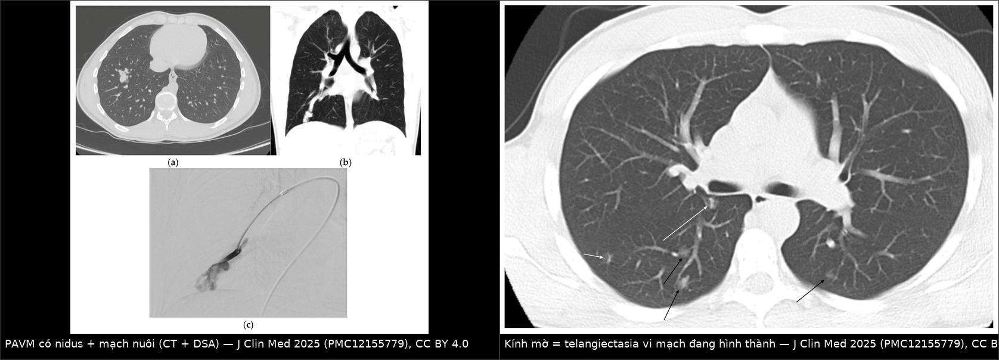
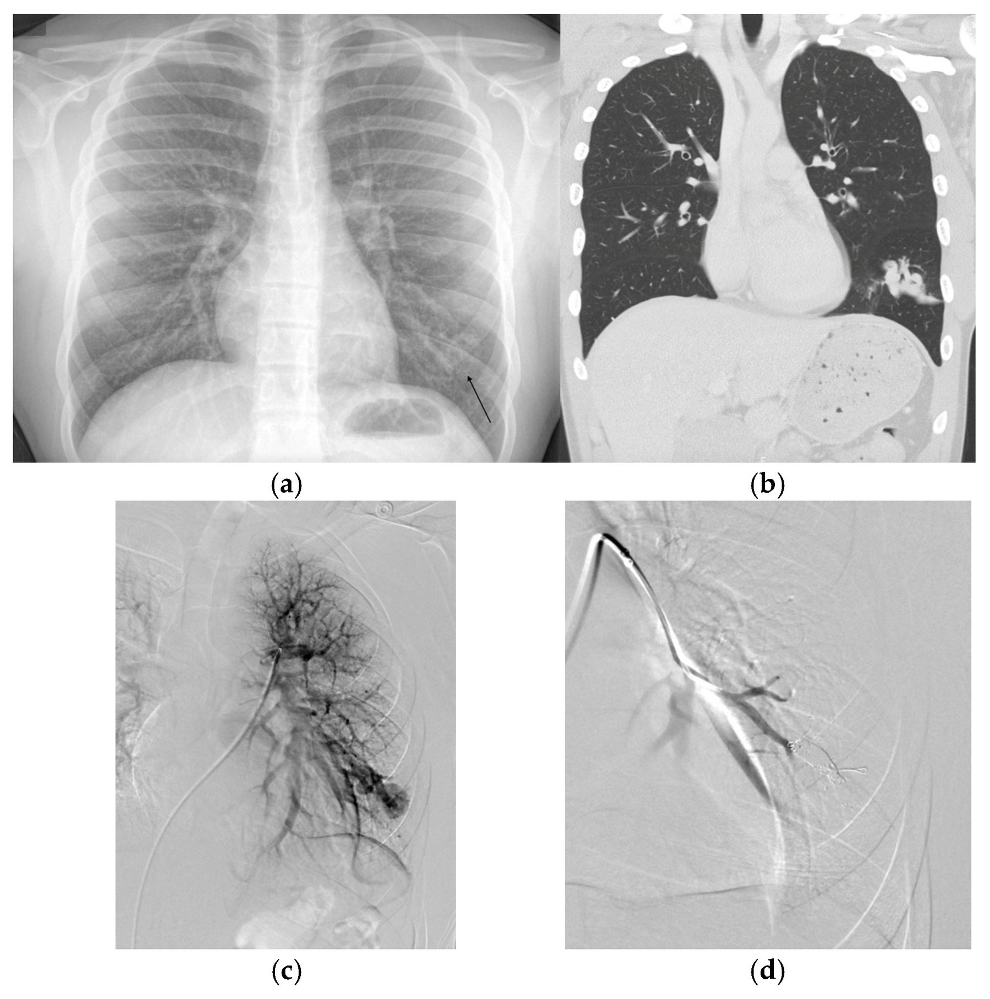
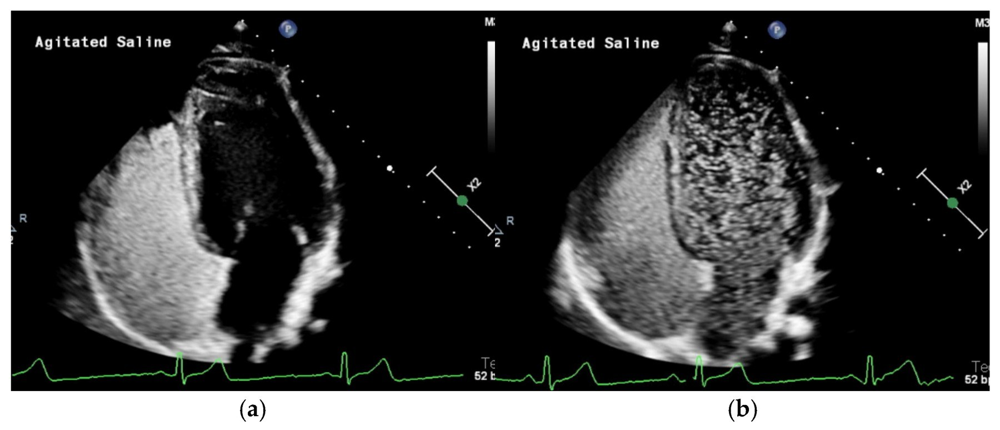
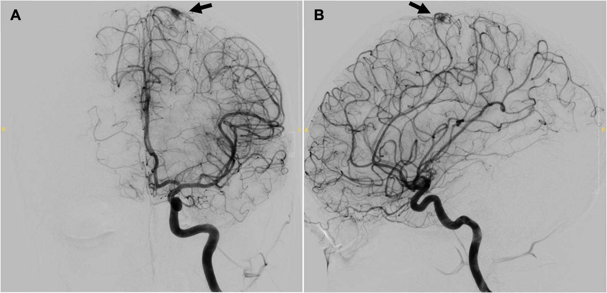
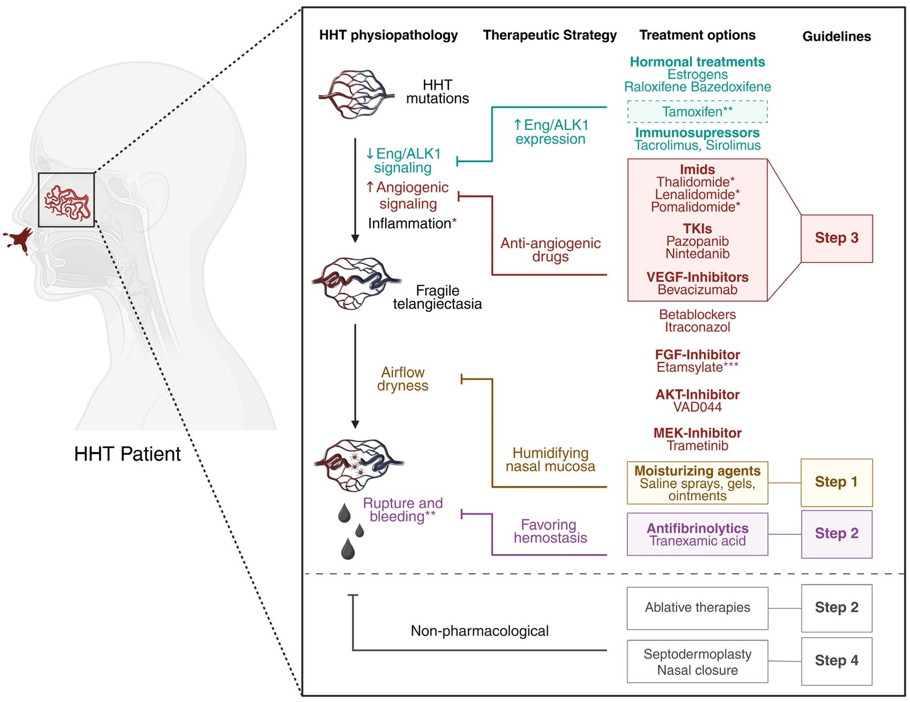

745 — Bệnh u mạch máu di truyền (HHT) ở trẻ: tầm soát AVM phổi – não & điều trị chảy máu cam tái diễn / Hereditary haemorrhagic telangiectasia in children
Tags: pattern:di-dang-dong-tinh-mach pattern:gian-mach-niem-mac pattern:kinh-mo pattern:shunt-phai-trai vung:mui vung:phoi vung:nao vung:gan score:Curacao score:Barzilai score:vanGent score:Shin score:ESS protocol:TTCE protocol:CT-nguc-lat-mong protocol:MRI-nao-MRA protocol:DSA-nut-mach
Mức chắc chắn (certainty): tổng hợp y văn (literature synthesis) — tổng quan có hệ thống về PAVM ở trẻ HHT (J Clin Med 2025, PMC12155779); cập nhật tiêu chuẩn Curaçao sau giải trình tự toàn hệ gen (J Med Genet 2024, PMC10850674); ca gia đình có bAVM ở trẻ 15 tuổi (BMC Pediatr 2026, PMC12954979); tổng quan điều trị chảy máu cam HHT (J Clin Med 2026, PMC12608258). Không có thử nghiệm ngẫu nhiên lớn nào về liều/chỉ định ở trẻ; các ngưỡng "khi nào nút mạch" là khuyến cáo của Second International HHT Guidelines được các nguồn trên trích lại.
Câu chốt: HHT ở trẻ không phải "chảy máu cam hay tái diễn" mà là bệnh mạch máu hệ thống có 3 cửa tử vong: (1) PAVM → shunt phải–trái gây giảm oxy và áp-xe não/đột quỵ do huyết khối nghịch (paradoxical embolus); (2) bAVM → xuất huyết não, có thể là biến cố đầu tiên (ca em gái 7 tuổi tử vong trước khi cả gia đình được chẩn đoán); (3) chảy máu cam/GI → thiếu máu thiếu sắt mạn. Ba câu hỏi phải trả lời ở mọi trẻ nghi HHT: có PAVM không (TTCE/CT) · có AVM não không (MRI/MRA) · chảy máu cam đang ở bậc nào (ESS). Sai lầm chết người: chờ đủ 3 tiêu chuẩn Curaçao ở trẻ (chảy máu cam phổ biến ở mọi trẻ, giãn mạch xuất hiện muộn) — phải xét nghiệm gen + tầm soát tạng khi có tiền sử gia đình.
1. Tổng quan bệnh học – cơ chế hình ảnh
1.1 Bệnh học: mất cân bằng BMP9/ALK1 → mao mạch bị "bỏ qua"
- Di truyền: trội nhiễm sắc thể thường; ENG (HHT1), ACVRL1/ALK1 (HHT2), SMAD4 (hội chứng JP-HHT), GDF2/BMP9; hai gen đầu chiếm 96% ca đủ tiêu chuẩn Curaçao, SMAD4 chỉ 1–2% (PMC12155779). Trình tự toàn hệ gen đã loại bỏ locus HHT3 trên nhiễm sắc thể 5 (PMC10850674).
- Cơ chế: mất chức năng endoglin/ALK1 → giảm tín hiệu BMP9–SMAD1/5/8 ở nội mô → tăng yếu tố sinh mạch (VEGF), giảm ổn định thành mạch. Kết quả: giãn mạch (telangiectasia) ở mao mạch niêm mạc và AVM ở tạng — nơi giường mao mạch bị thay bằng ống nối động–tĩnh mạch trực tiếp (PMC12608258).
- Vì sao PAVM gây bệnh nặng hơn "một nốt trong phổi": mất giường mao mạch phổi = mất bộ lọc duy nhất giữ huyết khối/vi khuẩn khỏi tuần hoàn hệ thống → shunt phải–trái. Hệ quả: giảm oxy (hypoxemia), ngón tay dùi trống, và đột quỵ/TIA/áp-xe não/nhồi máu cơ tim do embolus nghịch. Đây là lý do phải tầm soát chứ không chờ triệu chứng.
- Vì sao HHT hay bị bỏ sót ở trẻ: biểu hiện phụ thuộc tuổi — chảy máu cam có ở > 90% người HHT cả đời nhưng cũng rất phổ biến ở trẻ bình thường; giãn mạch môi/lưỡi/đầu ngón xuất hiện muộn; vì vậy Curaçao kém tin cậy ở trẻ (PMC12608258).
1.2 Ngưỡng định lượng trụ cột
| Đại lượng | Con số | Nguồn |
|---|---|---|
| Tần suất HHT | 1/5.000 – 1/8.000 (Bắc Mỹ 1/5.000); quần thể cách ly có thể 1/1.331 | PMC12608258, PMC12155779 |
| Tỉ lệ HHT có PAVM | 30–50%; ngược lại ~90% người có PAVM có HHT | PMC12155779 |
| PAVM ở trẻ HHT | gần bằng người lớn (không hiếm vì còn nhỏ); hay gặp ở ENG (HHT1) | PMC12155779 |
| Tốc độ lớn của túi PAVM | ~10%/năm đường kính trên CT; tăng nhanh trong dậy thì | PMC12155779 |
| Ngưỡng can thiệp (khuyến cáo) | Động mạch nuôi ≥ 3 mm → nút mạch nội mạch; hoặc PAVM lớn/có ý nghĩa sinh lý, SpO₂ giảm, đã có biến chứng | PMC12155779 (theo Second International HHT Guidelines) |
| Tái thông sau nút mạch ở trẻ | tới 70% (người lớn tới 50%); 44% phát triển tuần hoàn bàng hệ hệ thống | PMC12155779 |
| Nút mạch khi < 15 tuổi | 23,1% PAVM tồn tại (dai dẳng) | PMC12155779 |
| Thời gian theo dõi sau nút mạch | CT và/hoặc TTCE lúc 6–12 tháng; nếu không tái thông → mỗi 3 năm | PMC12155779 |
| Tầm soát định kỳ ở trẻ không triệu chứng | ≥ mỗi 5 năm | PMC12155779 |
| PAVM thể lan tỏa (diffuse) | ~4%; khó nút mạch, có ca cải thiện sau cắt phân thùy/thùy | PMC12155779 |
| bAVM ở trẻ HHT phát hiện khi tầm soát | 14% (trong đó 58% không triệu chứng); đoàn hệ tiến cứu khác: 3% (2/61) trẻ không triệu chứng | PMC12954979 |
| Nguy cơ vỡ của bAVM ở HHT | 20% (tổng quan hệ thống) | PMC12954979 |
| Chảy máu cam ở HHT | > 90% có ít nhất một lần trong đời | PMC12608258 |
| Thang ESS | 0–10 điểm; khác biệt tối thiểu có ý nghĩa = 0,71 → ngừng trị liệu nếu không giảm ≥ 0,71 | PMC12608258 |
1.3 TẠI SAO hình ảnh trông như vậy (vật lý + mô bệnh)
- Kính mờ (ground-glass opacity) trên CT = telangiectasia đang hình thành. Ở đây là vi mạch giãn giữa tiểu động mạch và tiểu tĩnh mạch — không có nidus lớn, không có bao; trên HRCT chỉ thấy mờ nhẹ, bờ không rõ. Vì vậy kính mờ ở trẻ HHT không mặc định là viêm phổi — đặc biệt khi nhiều ổ, đáy phổi, không sốt (PMC12155779, Hình 4).
- PAVM trưởng thành = nốt/kính mờ + 2 mạch nhìn rõ. Khi vi mạch lớn dần, động mạch nuôi và tĩnh mạch dẫn lưu trở nên nhìn thấy, rồi túi phình (sac) xuất hiện; trên CT không cản quang vẫn thấy vì máu trong lòng mạch ~40–60 HU tương phản với khí phổi −800 đến −900 HU — không cần tiêm cản quang. MIP giúp lần theo mạch nuôi/tĩnh mạch dẫn.
- Vì sao tĩnh mạch dẫn lưu thường to hơn động mạch nuôi: áp lực và lưu lượng bên tĩnh mạch tích lũy từ toàn nidus → giãn theo thời gian; dấu này giúp phân biệt với phình động mạch phổi (không có tĩnh mạch dẫn lưu to).
- Vì sao TTCE bắt được shunt: bong bóng siêu âm (agitated saline) bị giữ lại ở giường mao mạch bình thường; nếu có shunt trong tim → xuất hiện ở tim trái sau 1–2 chu kỳ; nếu shunt trong phổi → sau 3–8 chu kỳ (thời gian đi qua tuần hoàn phổi). Đây là lý do định thời bằng số chu kỳ tim, không phải "thấy bong bóng là xong".
- Vì sao bAVM ở HHT khó thấy trên MRA: tổn thương nhỏ, nhiều ổ, lưu lượng thấp, dễ bị coi là "mạch nổi" — ca 15 tuổi trong bài có MRI/MRA chỉ thấy mạch nổi + nốt nhỏ ở thùy chẩm phải, không nidus rõ, nhưng DSA mới xác định AVM đỉnh đầu từ động mạch cảnh trái (PMC12954979, Hình 2). Bài học: MRA bình thường/không kết luận + nghi ngờ cao → DSA, nhất là khi đã có hemosiderin (dấu xuất huyết cũ).
- Vì sao chảy máu cam tái diễn: niêm mạc mũi có telangiectasia thành mỏng, thiếu cơ trơn; không khí khô làm nứt niêm mạc → chảy máu. Do đó giữ ẩm là bậc 1, không phải "cầm máu bằng cách đốt" (PMC12608258).

Trái: PAVM thùy dưới phải — nidus có mạch nuôi rõ trên CT lát mỏng + hình chụp mạch chọn lọc tương ứng. Phải: nhiều ổ kính mờ (mũi tên đen) = telangiectasia vi mạch, kèm mạch thẳng đang hình thành (mũi tên trắng) ở trẻ HHT có giảm oxy và dùi trống ngón tay. Ảnh ghép letterbox từ J Clin Med 2025 (PMC12155779), CC BY 4.0.2. Mẫu hình + chẩn đoán phân biệt theo vị trí (gamut)
Mẫu hình chốt: trẻ có chảy máu cam tái diễn hoặc tiền sử gia đình HHT, kèm ≥ 1 tổn thương mạch: kính mờ/nốt phổi có mạch nuôi – tĩnh mạch dẫn, AVM não nhỏ nhiều ổ, giãn mạch môi/lưỡi/đầu ngón, hoặc shunt phải–trái trên TTCE.
2.1 Gamut theo cơ quan (ưu tiên tầm soát)
| Cơ quan | Tổn thương | Hệ quả nếu bỏ sót | Cách phát hiện |
|---|---|---|---|
| Phổi | PAVM (đơn giản ~90%, phức tạp ~10%, lan tỏa 4%) | Giảm oxy, đột quỵ/TIA, áp-xe não, vỡ gây ho máu | TTCE (sàng lọc) → CT lát mỏng (± MIP) → DSA để nút |
| Não | bAVM (nhỏ, nhiều ổ, Spetzler–Martin thấp) | Xuất huyết não (20% nguy cơ vỡ) | MRI + MRA (có cản quang); DSA khi MRA không kết luận |
| Mũi | Telangiectasia niêm mạc mũi | Thiếu máu thiếu sắt, truyền máu | Nội soi mũi; ESS |
| Gan | AVM gan (HHT2 nhiều hơn) | Suy tim cung lượng cao, tăng áp cửa | Siêu âm Doppler; CT/MRI có cản quang |
| Tiêu hóa | Telangiectasia niêm mạc | Xuất huyết tiêu hóa, thiếu máu | Nội soi khi có thiếu máu không rõ nguồn |
| Da – niêm mạc | Giãn mạch môi, lưỡi, đầu ngón, mặt | Không nguy hiểm nhưng là tiêu chuẩn chẩn đoán | Khám + soi đèn; chụp ảnh theo dõi |
2.2 Gamut theo tuổi (chọn xác suất trước và cách tầm soát)
- < 2 tuổi: hiếm có đủ tiêu chuẩn; chảy máu cam đơn thuần rất hiếm → nghĩ dị vật, viêm mũi, rối loạn đông máu. Nếu có tiền sử gia đình → xét nghiệm gen, không chờ triệu chứng.
- 2–10 tuổi: bắt đầu có giãn mạch môi; PAVM có thể đã lớn dù không triệu chứng → sàng lọc bằng SpO₂ + X-quang ngực hoặc TTCE; MRI não một lần khi chẩn đoán.
- Dậy thì: PAVM tăng nhanh (~10%/năm); chảy máu cam nặng lên; cân nhắc rút ngắn khoảng tầm soát.
- Vị thành niên: thường là lúc phát hiện PAVM lớn và nút mạch; đồng thời là lúc bAVM có thể biểu hiện.
2.3 Mnemonic "CAM–PAV–B" (5 câu hỏi ở trẻ nghi HHT)
- C — Curaçao có mấy tiêu chuẩn? (nhưng không chờ đủ 3 ở trẻ).
- A — Ai trong gia đình đã chảy máu cam / xuất huyết não / được chẩn đoán? (vẽ gia hệ).
- M — Mũi: ESS bao nhiêu, có thiếu máu thiếu sắt không?
- PAV — Phổi: SpO₂, X-quang, TTCE; AVM não: MRI/MRA.
- B — Bậc điều trị chảy máu cam (1 giữ ẩm → 2 TXA/đốt → 3 bevacizumab → 4 tạo hình/bịt mũi).
3. Bảng so sánh phân biệt (ma trận đối chiếu)
| Thực thể (entity) | Hình ảnh điển hình | Chốt vào (rule-in) | Chốt loại (rule-out) | Gợi ý xác nhận |
|---|---|---|---|---|
| PAVM trong HHT | Kính mờ/nốt + động mạch nuôi + tĩnh mạch dẫn lưu (tĩnh mạch thường to hơn), nhiều ổ, đáy phổi/lingula; TTCE grade 3 | Nhiều ổ + tiền sử gia đình/gen HHT + TTCE dương + ≥ 1 tổn thương có mạch nuôi rõ | Tổn thương đơn độc, không mạch nuôi, không shunt trên TTCE → không phải PAVM | CT lát mỏng ± MIP; TTCE; DSA trước nút |
| PAVM đơn độc (không HHT) | Một ổ, thường thùy dưới trái; không giãn mạch niêm mạc | Một tổn thương + không tiêu chuẩn Curaçao + gen âm | Nhiều ổ + giãn mạch môi + gia đình → HHT | Gen ENG/ACVRL1/SMAD4/GDF2 |
| Phình động mạch phổi | Nốt bờ rõ, không có tĩnh mạch dẫn lưu to, có thể vôi hóa thành | Thành mạch đủ 3 lớp, không có nidus | Có tĩnh mạch dẫn lưu to + shunt → PAVM | CTA/CT cản quang; theo dõi |
| Phình giả Rasmussen (lao hang) | Hang + mạch máu trong thành hang, thường một ổ, bối cảnh lao/ho máu | Ho máu + hang + bối cảnh nhiễm lao | Không hang, không nhiễm trùng → không phải | CTA; nút mạch |
| Hội chứng gan–phổi (HPS) | Giãn mạch đáy phổi đối xứng, shunt trong phổi trên TTCE, bệnh gan | Xơ gan + giảm oxy + shunt trong phổi không có nidus | Có nidus/mạch nuôi rõ → PAVM | Siêu âm tim cản âm; khí máu; CT |
| bAVM trong HHT | Nidus nhỏ, nhiều ổ, có thể chỉ mạch nổi + hemosiderin trên MRI, không có nidus rõ trên MRA | Nhiều ổ + HHT đã xác định + hemosiderin cũ | Một AVM lớn điển hình, không tổn thương khác → AVM lẻ | MRI + MRA; DSA khi không kết luận; SWI cho máu cũ |
| CM–AVM (RASA1/EPHB4) | AVM phổi/não + dị dạng mao mạch da (mảng hồng), có thể giống HHT | Gen RASA1/EPHB4 + mảng da + AVM | ENG/ACVRL1 dương → HHT | Panel gen mạch máu (có cả 6 gen) |
| Cavernoma (hang mạch) | "Popcorn", viền hemosiderin, không shunt, không có mạch nuôi | SWI: viền hemosiderin đậm, không nidus mạch | Có mạch nuôi + tĩnh mạch dẫn + shunt → AVM | MRI SWI; MRA/DSA âm |
4. Protocol chụp + hệ phân độ/điểm chuẩn hóa
4.1 Chẩn đoán: Curaçao + gen (và vì sao "Curaçao ở trẻ" là bẫy)
- 4 tiêu chuẩn Curaçao: (1) chảy máu cam tái diễn, tự phát; (2) giãn mạch niêm mạc ở vị trí điển hình (môi, khoang miệng, ngón tay, mũi); (3) tổn thương tạng (AVM phổi/gan/não/tủy, giãn mạch tiêu hóa); (4) tiền sử gia đình (người thân bậc 1).
- ≥ 3 tiêu chuẩn = HHT chắc chắn; 2 = nghi ngờ; nhưng dữ liệu mới: chỉ 1 tiêu chuẩn là PAVM cũng đủ gợi ý mạnh — PAVM đơn độc có thể là biểu hiện duy nhất (PMC10850674).
- Cảnh báo trung thực: tác giả PMC10850674 kết luận có thể đủ 3 tiêu chuẩn mà KHÔNG phải HHT → nên xét nghiệm gen để xác nhận, đặc biệt khi 3 tiêu chuẩn chỉ gồm chảy máu cam + giãn mạch + gia đình (khi đó nên gọi "HHT khả năng cao" thay vì "chắc chắn").
4.2 Tầm soát PAVM ở trẻ — hai con đường hợp lệ
flowchart TD
A[Trẻ có HHT hoặc nguy cơ do gia đình] --> B{Chọn chiến lược tầm soát}
B -->|Thận trọng, không kim chích| C[SpO2 + X-quang ngực + hỏi khả năng gắng sức]
B -->|Nhạy hơn| D[TTCE với huyết thanh muối lắc]
C --> E{SpO2 dưới 96 phần trăm hoặc X-quang bất thường?}
E -->|Có| F[CT ngực lát mỏng, liều thấp, không cản quang + MIP]
E -->|Không| G[Tầm soát lại mỗi 5 năm]
D --> H{Độ shunt theo Barzilai hoặc van Gent}
H -->|Grade 0-1| G
H -->|Grade 2-3| F
F --> I{Động mạch nuôi từ 3 mm trở lên hoặc có ý nghĩa sinh lý?}
I -->|Có| J[Nút mạch qua catheter]
I -->|Không, trẻ nhỏ| K[Theo dõi, cân nhắc hoãn tới sau dậy thì]
J --> L[CT hoặc TTCE sau 6-12 tháng]
L --> M{Không tái thông?}
M -->|Đúng| N[Tầm soát lại mỗi 3 năm]
M -->|Sai| J
- Vì sao có 2 chiến lược: chiến lược thận trọng (SpO₂ + X-quang) đã được chứng minh an toàn qua > 7.000 người–năm theo dõi, không có biến chứng PAVM ở trẻ đã tầm soát; đổi lại có thể bỏ sót PAVM nhỏ tới tuổi trưởng thành. TTCE nhạy hơn nhưng cần đường truyền, có dương tính giả (shunt vi mạch sinh lý, shunt gan) (PMC12155779).
- Ngưỡng cắt của TTCE: Barzilai 0–4 (theo độ đậm đặc thất trái); van Gent định lượng: grade 1 ≤ 29 bong bóng, grade 2 = 30–100, grade 3 > 100. Grade 0–1 gần như không có PAVM điều trị được → có thể hoãn CT (PMC12155779).
- CT ngực: lát mỏng, liều thấp, không cản quang là đủ; MIP để lần mạch; không dùng CT làm test sàng lọc đầu tay.
4.3 Phân độ PAVM ở trẻ trên CT (Shin) — dùng để mô tả "đang ở giai đoạn nào"
| Độ | Hình ảnh | Ý nghĩa |
|---|---|---|
| 0 | Nốt, không nghĩ PAVM | Không theo dõi như PAVM |
| 1 | Kính mờ (telangiectasia + viêm quanh mạch) | Chưa có mạch rõ |
| 2 | Kính mờ + mạch trong tổn thương tăng | Đang trưởng thành |
| 3A / 3B | Kính mờ + động mạch nuôi ở trung tâm / mạch thay dần nhu mô | Trung gian |
| 4A / 4B | ≥ 2 mạch rõ (động mạch nuôi + tĩnh mạch dẫn), tĩnh mạch ở ngoại vi / mạch thay nốt | Gần trưởng thành |
| 5 | Nốt, tĩnh mạch dẫn > động mạch nuôi, chưa có túi | Trưởng thành sớm |
| 6 | PAVM trưởng thành có túi, thấy rõ động mạch nuôi + tĩnh mạch dẫn | Chỉ định can thiệp nếu ≥ 3 mm |
(Nguồn bảng: PMC12155779, Table 1 — thang Shin cho PAVM nhi.)
4.4 AVM não: tầm soát và phân tầng
- MRI não có cản quang + MRA là test tầm soát được khuyến cáo khi chẩn đoán HHT ở trẻ (PMC12954979).
- DSA khi: MRA không kết luận, có hemosiderin trên SWI, hoặc có triệu chứng thần kinh mà hình ảnh không giải thích được. Ca 15 tuổi: MRI/MRA chỉ gợi ý, DSA xác định AVM đỉnh đầu và xạ phẫu (Gamma Knife) được chỉ định trước triệu chứng.
- Đặc điểm khác AVM lẻ: nhỏ hơn, nhiều ổ, Spetzler–Martin thấp hơn, ít chảy máu khi phát hiện — nhưng nguy cơ vỡ 20% trong tổng quan hệ thống nên không được "theo dõi đơn thuần" khi còn trẻ (PMC12954979).
4.5 Chảy máu cam: thang ESS và bậc thang điều trị
- ESS (Epistaxis Severity Score) gồm 6 câu (tần suất, thời gian, cường độ, cần chăm sóc y tế, thiếu máu, truyền máu) → 0–10; MID = 0,71.
flowchart TD
A[Trẻ HHT chảy máu cam] --> B[Đo ESS, Hb, ferritin, sắt]
B --> C[Bậc 1: giữ ẩm niêm mạc<br/>nước muối xịt hoặc gel 2 lần/ngày]
C --> D{ESS còn cao hoặc thiếu máu?}
D -->|Không| E[Theo dõi 3-6 tháng]
D -->|Có| F[Bậc 2: acid tranexamic<br/>1-1,5 g x 2-3 lần/ngày + đốt laser]
F --> G{Đáp ứng sau 3 tháng?}
G -->|Có| E
G -->|Không| H[Bậc 3: bevacizumab toàn thân<br/>5 mg/kg mỗi 2 tuần x 6 liều]
H --> I{Thất bại hoặc không dung nạp?}
I -->|Có| J[Bậc 4: tạo hình niêm mạc<br/>hoặc bịt mũi một hay hai bên]
I -->|Không| E
- Bậc 1 — giữ ẩm: nước muối 2 lần/ngày trong 12 tuần giảm ESS trong một RCT; đây là bậc rẻ, an toàn, làm trước (PMC12608258).
- Bậc 2 — acid tranexamic (TA): ATERO: 1,5 g × 2/ngày giảm thời gian chảy máu/tháng (không giảm số đợt); thử nghiệm khác 1 g × 3/ngày cải thiện ESS nhưng không tăng Hb; dạng xịt tại chỗ (NOSE) không khác placebo. Tác dụng phụ: đau đầu (tới 50%), rối loạn thị giác, co giật, huyết khối; giảm liều theo chức năng thận (thải 95% qua nước tiểu) (PMC12608258).
- Bậc 2 — đốt/áp lạnh: laser được ưu tiên hơn đốt điện (ít tổn thương niêm mạc); sóng cao tần: 57 bệnh nhân/150 lần, hiệu quả trung bình 25 tháng (1–86); xơ hóa bằng sodium tetradecyl sulfate: ESS −0,95 (p = 0,027); nguy cơ mù do nối động mạch (rất hiếm nhưng phải tư vấn) (PMC12608258).
- Bậc 3 — bevacizumab: InHIBIT-Bleed (n = 238): Hb +3,2 g/dL, ESS −3,4; RCT mù đôi (n = 24): thành công (giảm ≥ 50% truyền máu) 63,6% vs 33,3% (không đạt ý nghĩa vì thiếu lực), nhưng lượng hồng cầu truyền −44% vs −4% và Hb tăng có ý nghĩa. Tác dụng phụ (VASCERN, n = 69): đau khớp 10%, đau đầu 4%, protein niệu 3%, và 1 ca ho máu tử vong từ PAVM không được theo dõi → phải nút/sàng lọc PAVM trước khi dùng bevacizumab (PMC12608258).
- Bậc 4 — tạo hình niêm mạc/bịt mũi: ngừng chảy máu tới 83%, Hb +4,68 g/dL, giảm nhu cầu truyền máu; đổi lại phải thở bằng miệng, mất/giảm khứu giác, nhiều bệnh nhân từ chối hoặc xin mở lại (PMC12608258).
4.6 Nút mạch PAVM ở trẻ — điểm khác người lớn
| Vấn đề | Người lớn | Trẻ |
|---|---|---|
| Tái thông | tới 50% | tới 70%; 23,1% PAVM tồn tại nếu nút < 15 tuổi |
| Bàng hệ hệ thống | ít | 44% phát triển tuần hoàn bàng hệ |
| Chiến lược | nút khi ≥ 3 mm | cân nhắc hoãn PAVM nhỏ, không triệu chứng tới sau dậy thì để tránh tái thông khó xử lý |
| Kỹ thuật | gây tê tại chỗ | gây mê cho trẻ nhỏ; heparin 50–100 U/kg, đích ACT 200; cefazolin 25–50 mg/kg; cản quang 6–8 mL/kg; cẩn thận bọt khí (nguy cơ embolus nghịch) |
(Nguồn: PMC12155779.)
5. Biến thể bình thường và cạm bẫy
5.1 "Bình thường" dễ đọc quá
- Shunt vi mạch nhỏ trên TTCE (grade 1) có thể gặp ở người không có PAVM — do giãn mao mạch sinh lý; grade 0–1 không cần CT.
- Giãn mạch môi ở trẻ dậy thì có thể chỉ là mạch máu bình thường; Curaçao đòi nhiều tổn thương ở vị trí điển hình, không phải một nốt.
- Mạch nổi trên MRA ở trẻ có thể là bất thường phát triển bình thường; chỉ gọi bAVM khi có nidus hoặc DSA xác nhận.
- Kính mờ đáy phổi ở trẻ nằm lâu (xẹp phổi phụ thuộc) có thể giống telangiectasia — đọc trên HRCT thì hít vào, đối chiếu vị trí và tính đối xứng.
5.2 Cạm bẫy
- Chờ đủ 3 tiêu chuẩn Curaçao ở trẻ → bỏ sót. Trẻ có tiền sử gia đình phải xét nghiệm gen + tầm soát tạng ngay (PMC12608258).
- Coi PAVM là "bất thường lành tính" → bỏ qua áp-xe não/đột quỵ; PAVM là đường vào của embolus nghịch, không phải nốt theo dõi thụ động.
- Tầm soát não bằng MRA rồi kết luận "không có AVM" khi MRA không kết luận — ca 15 tuổi chứng minh DSA cần thiết (PMC12954979).
- Đọc kính mờ ở trẻ HHT là "viêm phổi" và cho kháng sinh lặp lại — kiểm tra vị trí đáy phổi, nhiều ổ, không sốt, SpO₂ thấp.
- Dùng bevacizumab khi chưa loại trừ/điều trị PAVM → nguy cơ ho máu tử vong (ca trong VASCERN) (PMC12608258).
- Nút mạch PAVM nhỏ trước dậy thì → tái thông cao và khó nút lại do mạch méo; cân nhắc hoãn.
- Quên khám da – niêm mạc và vẽ gia hệ: chẩn đoán HHT ở trẻ thường đến từ một người lớn trong nhà; bỏ qua = bỏ lỡ tầm soát cascade cho anh chị em.
- "Đã nút mạch là xong" — PAVM mới có thể xuất hiện; theo dõi 6–12 tháng rồi mỗi 3 năm (PMC12155779).
- Thiếu máu thiếu sắt ở trẻ HHT bị coi là "ăn uống kém" — phải tính lượng máu mất qua chảy máu cam và bổ sung sắt (đa số bệnh nhân cần), đôi khi truyền máu.
- Sai thời điểm đọc TTCE: đếm bong bóng sau 3–8 chu kỳ cho shunt phổi, 1–2 chu kỳ cho shunt trong tim — đọc lệch sẽ gọi nhầm PFO thành PAVM (hoặc ngược lại).
6. Tự lượng giá — Blind Quiz
Ca 1 — Vị thành niên khó thở khi gắng sức, X-quang có đám mờ đáy phổi trái. Nhìn 4 ảnh trước khi đọc đáp án.

- Gợi ý: khó thở và giảm khả năng gắng sức; sau đó được chẩn đoán HHT.
- Câu hỏi: (a) Đám mờ là gì và vì sao không cần cản quang vẫn thấy? (b) Ảnh (c) và (d) khác nhau ở điểm nào? (c) Chỉ định can thiệp dựa trên ngưỡng nào?
Bấm để hiện đáp án (findings + chẩn đoán)
- Dấu hiệu: (a) X-quang: đám mờ bờ không rõ thùy dưới trái (mũi tên); (b) CT không cản quang lát trục: nidus mạch + mạch nuôi và tĩnh mạch dẫn; (c) chụp mạch phổi chọn lọc: nidus mạng mạch lớn; (d) sau nút: mất tưới máu phần nidus, còn coil/plug.
- Chẩn đoán: PAVM phức tạp thùy dưới trái trong bệnh cảnh HHT.
- Vì sao không cần cản quang: máu trong lòng mạch ~40–60 HU tương phản với khí phổi (−800 đến −900 HU); CT lát mỏng + MIP đủ lần mạch.
- Ngưỡng can thiệp: động mạch nuôi ≥ 3 mm, PAVM lớn/có ý nghĩa sinh lý, SpO₂ giảm, hoặc đã có biến chứng.
- Nguồn: J Clin Med 2025 (PMC12155779), CC BY 4.0.
Ca 2 — Trẻ HHT, siêu âm tim với huyết thanh muối lắc. Nhìn 2 khung trước.

- Gợi ý: khung (b) lấy 8 chu kỳ tim sau khung (a).
- Câu hỏi: (a) Đây là shunt trong tim hay trong phổi? Vì sao? (b) Độ shunt xếp loại gì? (c) Bước tiếp theo?
Bấm để hiện đáp án (findings + chẩn đoán)
- Dấu hiệu: (a) thất phải căng đầy bong bóng, thất trái còn trống; (b) sau 8 chu kỳ, thất trái đầy bong bóng dày đặc.
- Kết luận: shunt trong phổi (intrapulmonary) — bong bóng xuất hiện muộn (3–8 chu kỳ); nếu trong tim (PFO) sẽ thấy sau 1–2 chu kỳ.
- Độ: grade 3 (theo van Gent: > 100 bong bóng/khung; hoặc Barzilai 4 nếu đậm đặc hoàn toàn) → chỉ định CT ngực để tìm PAVM điều trị được.
- Bước tiếp theo: CT lát mỏng không cản quang → nếu động mạch nuôi ≥ 3 mm → nút mạch; nếu nhiều ổ nhỏ, cân nhắc theo dõi.
- Nguồn: J Clin Med 2025 (PMC12155779), CC BY 4.0.
Ca 3 — Bé trai 15 tuổi chảy máu cam tái diễn; em gái 7 tuổi tử vong đột ngột sau 1 ngày nôn và lơ mơ.

- Gợi ý: mẹ có chảy máu cam và giãn mạch môi; MRI/MRA não trước đó chỉ thấy mạch nổi + nốt nhỏ thùy chẩm phải, có hemosiderin ở vỏ chẩm phải.
- Câu hỏi: (a) Chẩn đoán và tiêu chuẩn nào đã đạt? (b) Vì sao MRA không kết luận mà vẫn phải DSA? (c) Xử trí thế nào khi trẻ chưa có triệu chứng thần kinh?
Bấm để hiện đáp án (findings + chẩn đoán)
- Dấu hiệu: DSA động mạch cảnh trái: AVM nhỏ ở đỉnh đầu (mũi tên) — (A) hình thẳng, (B) hình nghiêng; các ổ mạch nhỏ khác ở tuần hoàn sau.
- Chẩn đoán: HHT (đột biến ENG c.1134G>A, p.Ala378=, phân loại pathogenic) với chảy máu cam + giãn mạch môi + tiền sử gia đình; bAVM nhiều ổ.
- Vì sao DSA: bAVM trong HHT nhỏ, nhiều ổ, lưu lượng thấp → MRA dễ bỏ sót; hemosiderin trên MRI là dấu xuất huyết cũ nên không được dừng ở MRA.
- Xử trí: xạ phẫu Gamma Knife trước triệu chứng (đã thực hiện), theo dõi thần kinh; đồng thời tầm soát cascade cho anh chị em (một người anh 12 tuổi âm tính được ra khỏi chương trình).
- Phản biện: đây là ca gia đình có biến cố tử vong — không chứng minh xạ phẫu tốt hơn theo dõi; các lựa chọn khác gồm vi phẫu/nút mạch tùy vị trí.
- Nguồn: BMC Pediatr 2026 (PMC12954979), CC BY-NC-ND 4.0 — ảnh dùng nguyên bản, không chỉnh sửa.
Ca 4 (tùy chọn) — Trẻ HHT chảy máu cam 4–5 lần/tuần, Hb 9,2 g/dL. Trước khi chọn điều trị, hãy xem bậc thang.

Bấm để hiện đáp án (findings + chẩn đoán)
- Đánh giá: tính ESS (0–10); trẻ này có thiếu máu và tần suất cao → ESS thường > 6.
- Bậc 1: giữ ẩm (nước muối/gel 2 lần/ngày) + bổ sung sắt; đo lại sau 12 tuần.
- Bậc 2: acid tranexamic uống ± đốt laser. Hai liều đã có dữ liệu là 1,5 g × 2/ngày (ATERO) và 1 g × 3/ngày; chưa có RCT liều ở trẻ — dùng theo cân nặng và hướng dẫn của đơn vị.
- Bậc 3: bevacizumab toàn thân 5 mg/kg mỗi 2 tuần × 6 liều — chỉ sau khi đã tầm soát/nút PAVM.
- Bậc 4: tạo hình niêm mạc/bịt mũi khi phụ thuộc truyền máu.
- Nguyên tắc: ngừng/đổi bậc nếu ESS không giảm ≥ 0,71.
- Nguồn: J Clin Med 2026 (PMC12608258), CC BY 4.0.
Bài liên quan chéo
- 743 – Chảy máu cam nặng/tái diễn ở trẻ: nội soi, CTA, DSA & nút mạch — bài tiếp cận triệu chứng; HHT chỉ là một hàng trong gamut
- 744 – Chảy máu cam ở trẻ có rối loạn đông máu — phân biệt bằng xét nghiệm đông máu
- 741 – Dị dạng mạch máu đầu–cổ ở trẻ: ISSVA, PHACE & LUMBAR — phân loại dị dạng mạch
- 094 – Ho ra máu từ động mạch phổi: phình giả Rasmussen & nút mạch phổi — phân biệt phình giả với PAVM
- 091 – Ho ra máu ồ ạt & nút mạch động mạch phế quản
- 020 – Nốt phổi & Fleischner — nốt ở trẻ không áp Fleischner
- 212 – Xuất huyết não — biến cố của bAVM
- 746 – CM-AVM (RASA1/EPHB4) — hàng phân biệt ngược chiều: mảng đỏ nhiều ổ + shunt não–tủy nhưng KHÔNG có PAVM (đừng tầm soát phổi–gan như HHT)
Ảnh
- Tên file:
745_*_Modality_SourceID; nguồn + giấy phép từng ảnh trongimages/CREDITS.md. composite_pavm-truong-thanh.jpg— ghép 2 hình CC BY 4.0 (PMC12155779), letterbox bằngtools/make_composite.py.- Ảnh từ BMC Pediatr (PMC12954979, CC BY-NC-ND) dùng nguyên bản, không ghép/crop.
- Không dùng ảnh từ nguồn không rõ giấy phép; Radiopaedia/AuntMinnie chỉ dẫn link.
Không dùng để chẩn đoán độc lập khi chưa có người hướng dẫn.